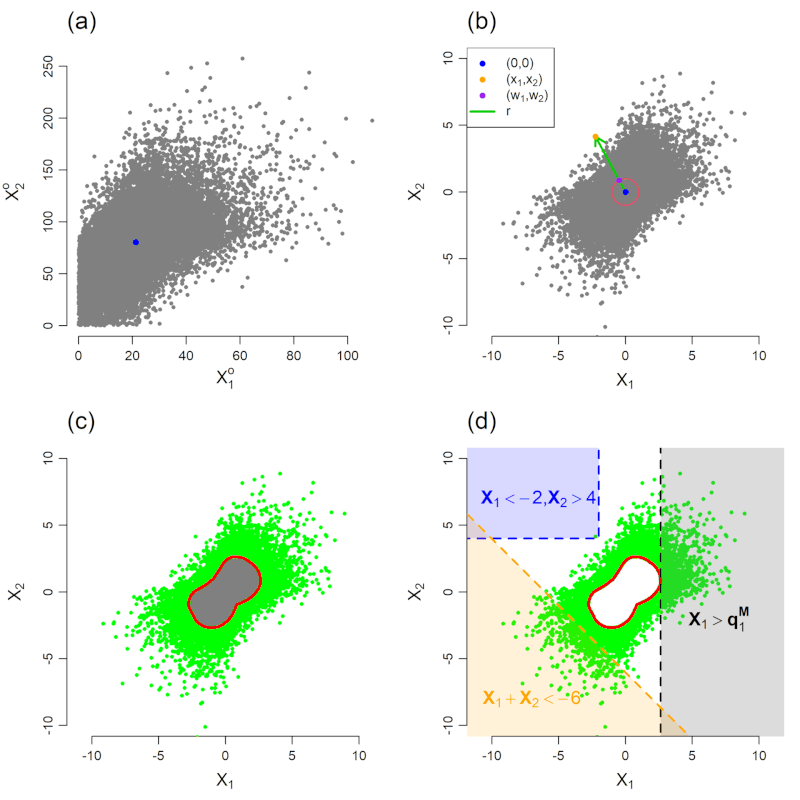
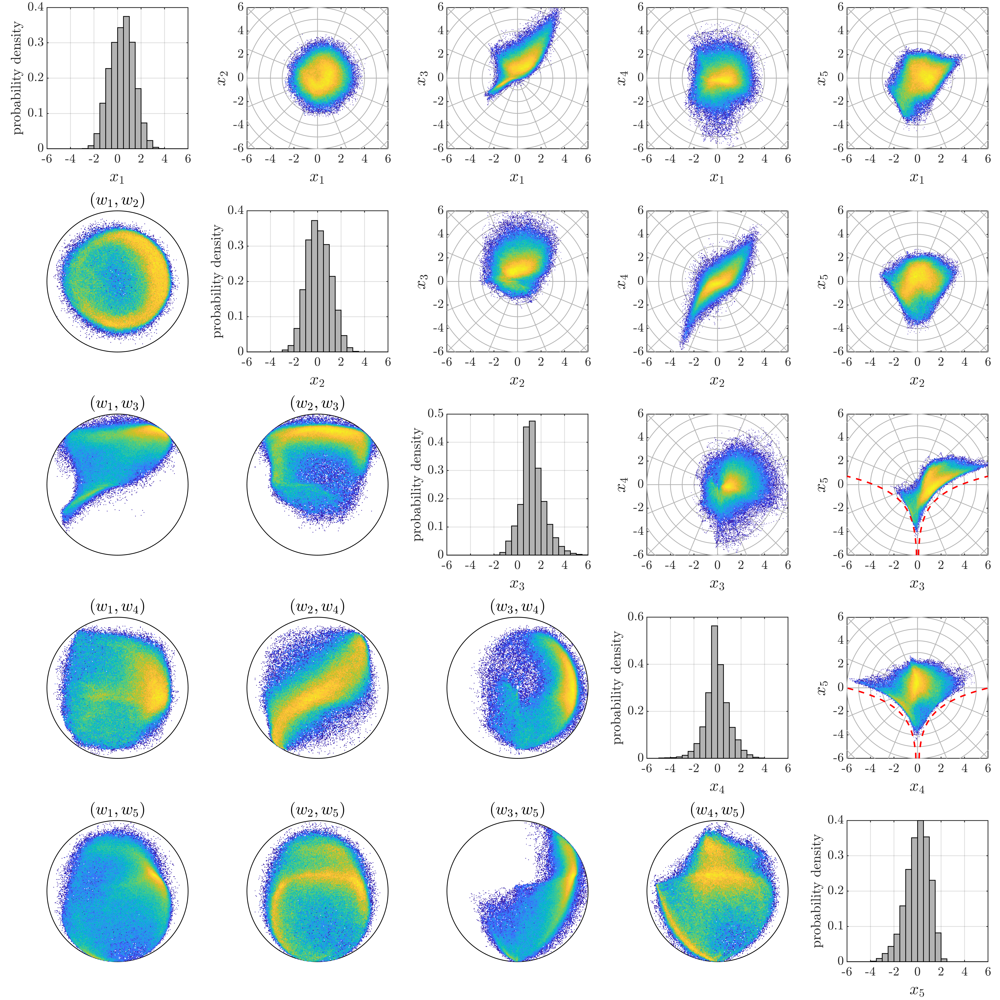
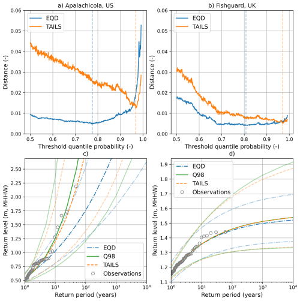
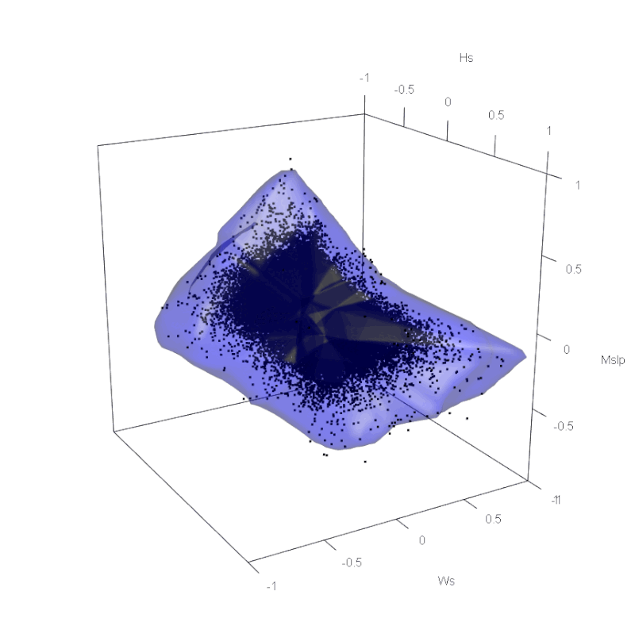
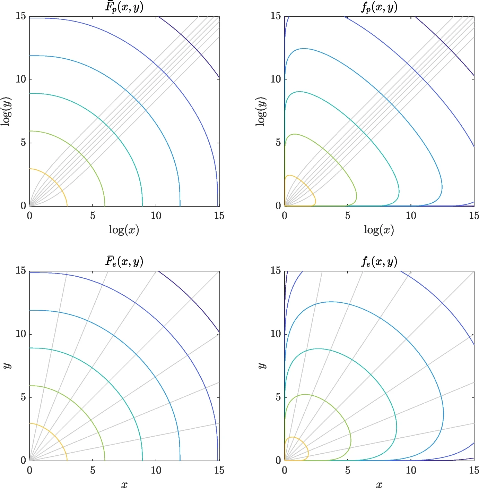
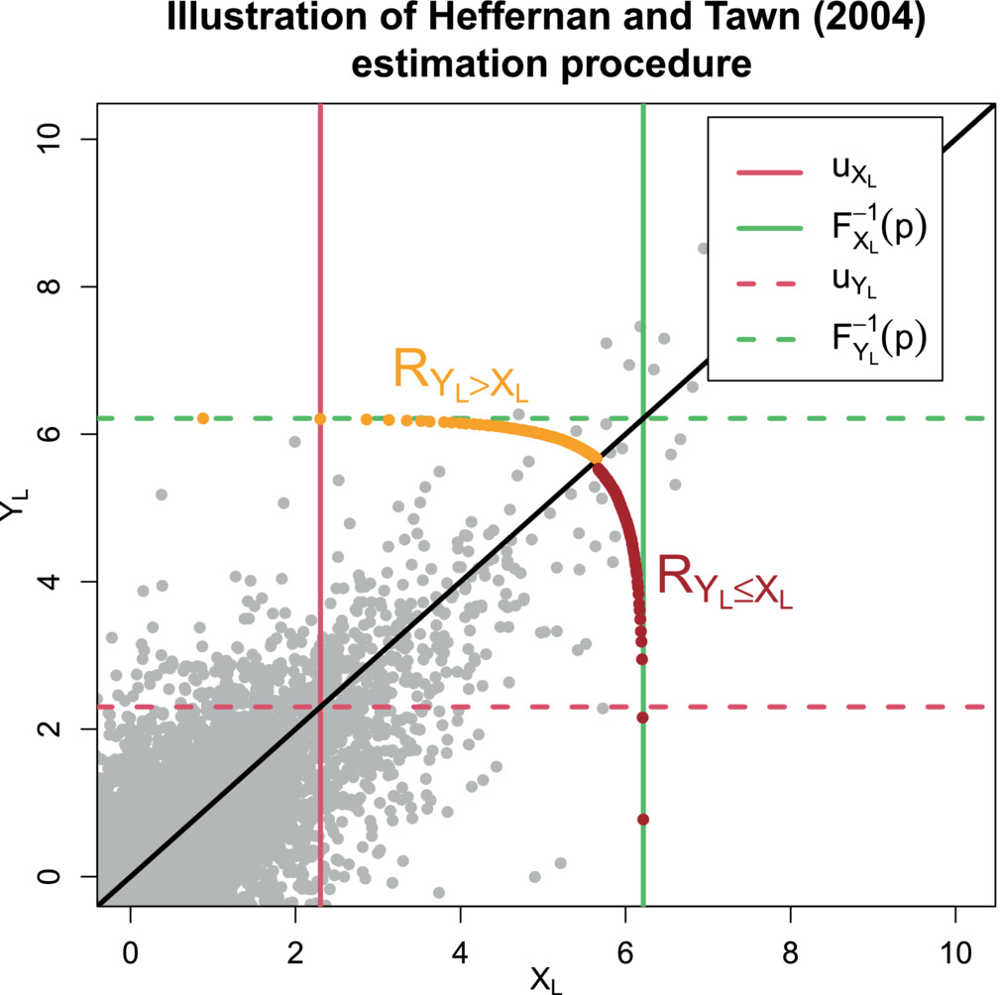

Making contemporary extreme value modelling accessible to the world.
OpenEVT provides expert consulting on Extreme Value Theory (EVT), bridging the gap between cutting-edge statistical research and practical implementation.
What we offer
Services
OpenEVT provides expert statistical consulting in EVT — the branch of statistics concerned with rare, high-impact events at the tail of the distribution. Our focus is on practical implementation: translating contemporary statistical research into working models, software, and analyses that organisations can use operationally.
OpenEVT bridges the gap between cutting-edge EVT methodology and the problems that engineers, risk analysts, and scientists face in practice. Whether you need a model for extremal dependence, an automated pipeline, or a bespoke deep learning framework, OpenEVT delivers working solutions.
Univariate EVT
GEV and GPD modelling, return level estimation, threshold selection, and model diagnostics.
Multivariate EVT
Probability analysis for joint extremes: angular-radial frameworks (SPAR, geometric), extremal dependence modelling, and joint return period estimation.
Model development & implementation
End-to-end delivery of EVT pipelines, from methodology selection and validation to production-ready, documented code your team can maintain and extend.
AI techniques for EVT
Implementation of contemporary deep learning approaches for tail estimation.
Environmental statistics
Statistical modelling of environmental processes, such as river discharge, sea levels, metocean variables, and climate model data.
Multi-hazards
Probabilistic assessment of risk from multiple natural hazards.
Compound extremes
Modelling scenarios where multiple variables jointly reach extreme levels.
Stochastic event set generation
Simulation of large synthetic catalogues of extreme events for use in catastrophe modelling, stress testing, and probabilistic risk quantification.
Code development
Open-source package development implementing novel EVT methodology, with a focus on reproducibility, documentation, and accessibility for practitioners.
Who we are
About OpenEVT
OpenEVT was established by Dr. Callum Murphy-Barltrop in 2026 with a singular mission: to make modern statistical tools for extreme events transparent, practical, and directly applicable for organisations. Whether addressing climate extremes, compound flood risk, or engineering stress limits, OpenEVT helps organisations understand and quantify what lies at the edge of the distribution.
About Dr. Callum Murphy-Barltrop
Callum is a statistician specialising in extreme value theory, with a PhD from Lancaster University, three years' postdoctoral research experience at TU Dresden & ScaDS.AI, and direct industry and consulting experience (Fathom, the ONR). His motivation for founding OpenEVT was to help organisations develop working implementations and solutions for problems involving extreme events — closing the gap between what contemporary EVT can do and what most practitioners actually use.
He is passionate about demystifying EVT and making cutting-edge methods accessible for practical applications, and is committed to developing open-source tools so that state-of-the-art statistical software is available to all. He has published 18 journel articles and preprints, spanning a wide range of EVT topics.
Selected Research
Example Works
A selection of applied research projects illustrating the methods OpenEVT brings into practice.

Exploring Climate Change Effects on Concurrent Floods and Droughts via Statistical Deep Learning
Applies the SPAR framework to model concurrent extreme river discharge events across four catchments in the Upper Danube basin, driven by large-ensemble climate model output. Finds that both compound flooding and concurrent drought events are becoming more likely in the Alpine Foreland under climate change. This work demonstrates how contemporary EVT methods can help quantify the changing risk of compound hydro-climatic extremes.
Read preprint →
Deep Learning Joint Extremes of Metocean Variables Using the SPAR Model
A novel deep learning framework for estimating multivariate joint extremes of offshore environmental variables — wind speed, direction, wave height, period, and direction — using the SPAR model. Neural networks represent the model parameters, enabling accurate joint risk assessment for offshore structures up to five dimensions.
Read paper →
Automated Tail-Informed Threshold Selection for Extreme Coastal Sea Levels
Introduces TAILS, a new automated threshold selection method for peaks-over-threshold extreme value analysis that focuses model fitting on the uppermost tail of the data. Applied to 417 global tide gauge records, TAILS outperforms existing automated approaches on goodness-of-fit tests and selects appropriately high thresholds.
Read paper →
Deep Learning of Multivariate Extremes via a Geometric Representation
Introduces the first deep learning approach to modelling extremal limit sets, overcoming current limitations that restrict geometric extreme value methods to low-dimensional settings. Neural networks provide flexible, asymptotically justified models for extremal dependence, with application to joint North Sea metocean data.
Read preprint →
Inference for bivariate extremes via a semi-parametric angular-radial model
Introduces the first inference technique for the SPAR model, with application to North Sea metocean data.
Read paper →
New estimation methods for extremal bivariate return curves
Introduces novel methodology for estimating joint return periods, or return curves, in two dimensions. The proposed methodology offers a high degree of flexibility and can be applied across different dependence classes.
Read paper →Training
Professional Training in EVT Methodology
A key part of OpenEVT's mission is making extreme value methods genuinely accessible — not just as a consulting service, but through direct knowledge transfer. OpenEVT offers bespoke training for practitioners and teams who want to build in-house capability in EVT and related methods.
Foundations of EVT
An introduction to univariate extreme value theory: block maxima, peaks-over-threshold, GEV and GPD distributions, return levels, and practical threshold selection. Suitable for engineers, risk analysts, and scientists with a working knowledge of statistics.
Multivariate Extremes
An intermediate course covering extremal dependence, joint probability analysis, angular-radial models, and practical approaches to estimating joint risk. Includes hands-on implementation in R.
AI for EVT
An advanced module covering deep learning approaches to tail modelling.
Bespoke Team Workshops
Custom training sessions designed around your organisation's data, sector, and specific challenges — from a half-day introduction to a multi-day deep dive. Delivered in-person or remotely.
Interested in training for your team? Get in touch to discuss formats, content, and scheduling.

Our commitment
The 10% Pledge
OpenEVT is committed to donating at least 10% of its profits to highly effective charities, in line with the principles of Giving What We Can (GWWC).
What we've committed to
OpenEVT pledges to give at least 10% of its net profits each year to organisations that can most effectively use those funds to improve the lives of others. We choose charities through GWWC, helping to prioritise those with the greatest measurable good.
Learn about the 10% Pledge →About Giving What We Can
GWWC is an international organisation dedicated to inspiring and supporting more effective giving. Founded in 2009 by Oxford philosophers Toby Ord and Will MacAskill, GWWC promotes the 10% Pledge — a public commitment to give at least 10% of income to the organisations best placed to help others. More than 11,000 people in over 95 countries have now taken the pledge.
GWWC recognises that not all charities deliver equal impact, and provides research-backed guidance to help donors direct funds where they will do the most good — across global health, poverty alleviation, animal welfare, and the long-term future.
Visit givingwhatwecan.org →Get in Touch
Interested in working together, discussing a project, or finding out more about training? Get in touch — an initial conversation is always free.
Email OpenEVTor contact us directly via em.notorp@tvenepo